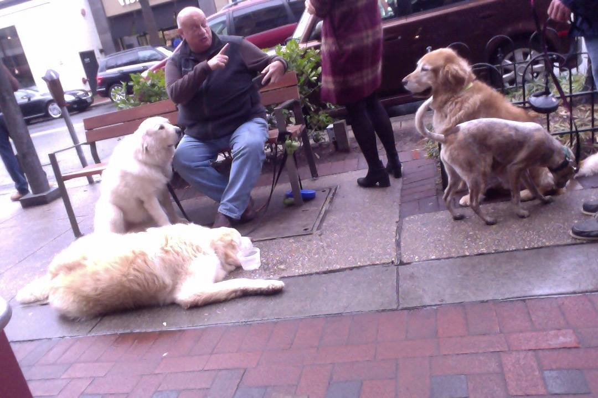
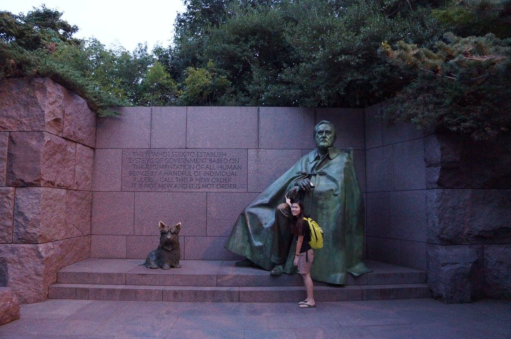
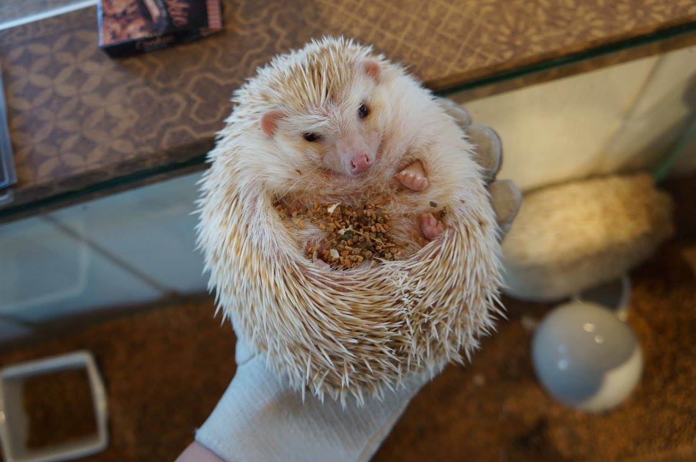
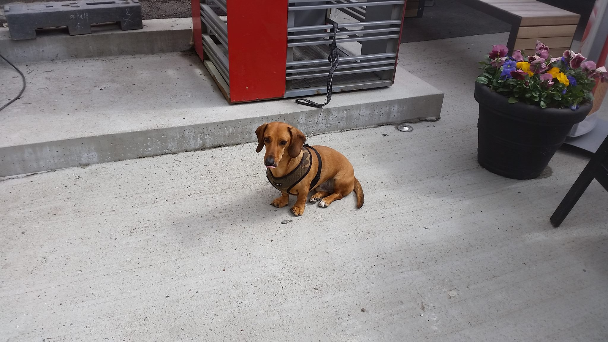
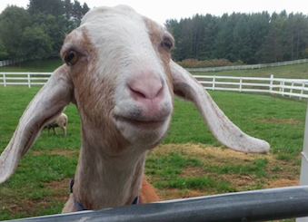

Cat in the Ruins
Wonder whether apostle Paul had a cat on his lap while sharing the Gospel in Ephesus.
Cat in the Ruins
Wonder whether apostle Paul had a cat on his lap while sharing the Gospel in Ephesus.
 The restaurant cat
I got a menemen at this restaurant in Kadikoy. Menemen is a Turkish vegetarian breakfast dish made with eggs and tomatoes.
The restaurant cat
I got a menemen at this restaurant in Kadikoy. Menemen is a Turkish vegetarian breakfast dish made with eggs and tomatoes.

The tres-legged dog
The dog on the left drinking water survived a shooting in Texas when he was one, and after that, he was left with three legs. #Rescued

"You know, Fala is Scotch, and being a Scottie, as soon as he learned that the Republican fiction writers in Congress and out had concocted a story that I'd left him behind on an Aleutian island and had sent a destroyer back to find him— at a cost to the taxpayers of million of dollars— his Scotch soul was furious. He has not been the same dog since."
 Very fierce otter
He saw food and took it quickly.
Very fierce otter
He saw food and took it quickly.
 Raw-fish diet
A North MI cat got raw-fish for food.
Raw-fish diet
A North MI cat got raw-fish for food.

Heavy hedgehog
This hedgehog was literally hiding itself in food.
 Hank the boss
His owner said that he is a boss.
Hank the boss
His owner said that he is a boss.
 Heading down to the Grand River
Mama duck was leading the ducklings down to the Grand River from Van Andel.
Heading down to the Grand River
Mama duck was leading the ducklings down to the Grand River from Van Andel.
 A cat needed patting
Still in Bergen. She stopped, and I patted her.
A cat needed patting
Still in Bergen. She stopped, and I patted her.

Dog from Bergen
It was outside of the restaurant. My 1st time in Europe.
 Cow not to be crossed
From the dairy farm where Tyler works.
Cow not to be crossed
From the dairy farm where Tyler works.
 Munching Emmy's shoe
Emmy worked in MSU sheep farm, and her shoe was being munched.
Munching Emmy's shoe
Emmy worked in MSU sheep farm, and her shoe was being munched.
 Sleepy seals
SF seals during Christmas break.
Sleepy seals
SF seals during Christmas break.

Sassy sheep
During fall retreat, Elise and I saw this girl.
 Cat
From a cat cafe in Tokyo.
Cat
From a cat cafe in Tokyo.
 Scary squrriel
This is in Gifu, which you have to take a cable car to get up to the castle. There's this squrriel
Scary squrriel
This is in Gifu, which you have to take a cable car to get up to the castle. There's this squrriel
 Sheep squad
During a class in my studying abroad progam in rural Japan. My environmental study squad did a ton of hiking that summer, and we have to bike to school for 45 minutes everyday.
Sheep squad
During a class in my studying abroad progam in rural Japan. My environmental study squad did a ton of hiking that summer, and we have to bike to school for 45 minutes everyday.
 Daring deer
Deers in Nara are very well-fed by tourists. I bought a stack of crackers to feed them, and there's this deer putting the entire stack of crackers and my wallet into its mouth.
Daring deer
Deers in Nara are very well-fed by tourists. I bought a stack of crackers to feed them, and there's this deer putting the entire stack of crackers and my wallet into its mouth.
 Gramma dog
Met her in the middle of downtown Havana on our day-off. We also got very magical churros.
Gramma dog
Met her in the middle of downtown Havana on our day-off. We also got very magical churros.
 Chloe from Havana
Chloe followed my mission team through Havana. I was on a mission trip with Cru and Filter of Hope to distribute water filters and share the Gospel to Cuban families!
Chloe from Havana
Chloe followed my mission team through Havana. I was on a mission trip with Cru and Filter of Hope to distribute water filters and share the Gospel to Cuban families!